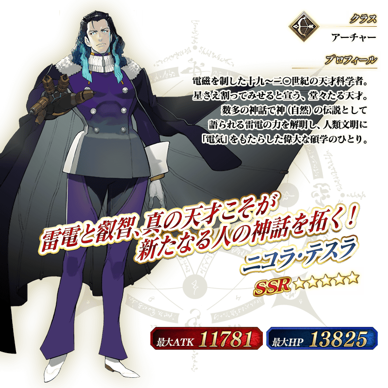
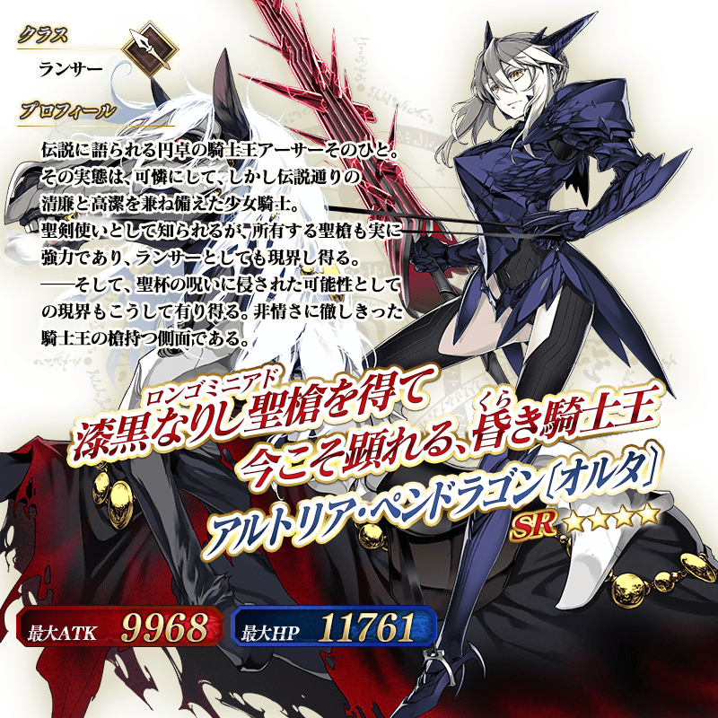

◆PickUp召喚期間◆
期間：2016年1月13日(三) 15:00 ～ 2016年1月20日(三) 12:59
以期間限定在故事召喚舉辦倫敦Pick Up2召喚！
※未通過第四特異點的狀態也能進行倫敦Pick Up２。
「第四特異點 死界魔霧都市 倫敦」活躍的Servant「★5（SSR）尼古拉・特斯拉」、「★4（SR）阿爾托莉亞・潘德拉剛〔Alter〕〔Alter〕」的２位Pick Up！
※阿爾托莉亞・潘德拉剛〔Alter〕為Lancer職階。
Pick Up期間中上述２位Servant的出現機率提升！
10次召喚中★4(SR)以上1張確定和★3(R)以上的Servant1位確定！
※★4(SR)以上確定包含Servant和概念禮裝。



